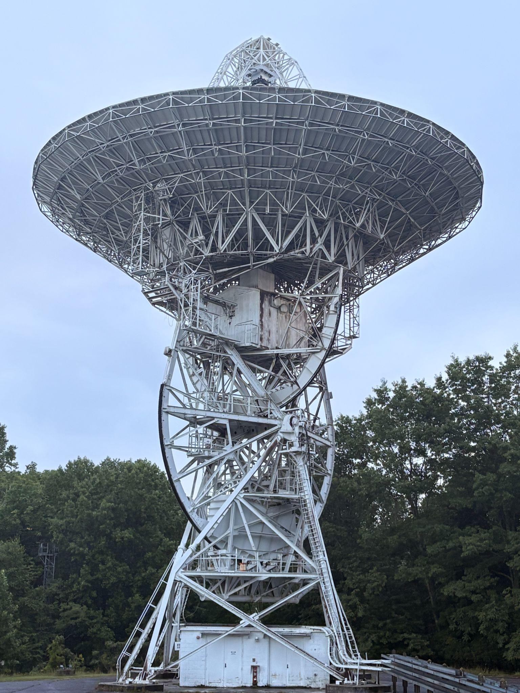
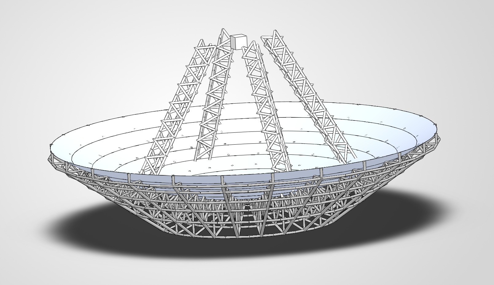

Engineering Work
Projects
A fully 3D-printed animatronic dragon with coordinated wing flapping and tail wagging, driven by servo motors through a custom gear linkage system. Designed entirely in Fusion 360.
The wing mechanism uses a spur gear train to translate servo rotation into synchronized bilateral wing motion. The tail uses a segmented spine linkage for fluid movement. Both systems run off separate SG90 servos controlled by an Arduino.
Every structural component - shell panels, gear housings, linkage arms, body frame - was modeled and 3D printed. Built entirely outside of class for a design competition.

After a lightning strike destroyed the servo drive system on 26 West, a 26-meter radio telescope at PARI, the replacement was commissioned at a conservative 0.33°/sec slew limit with no formal analysis behind the number — a fraction of the telescope's original hydraulic-era speed of 3°/sec. I was tasked with finding the actual safe limit.
The approach centers on two kinematic equations: τ = Iα to find the maximum angular acceleration from motor torque and dish inertia, then ωᵢ = √(2αθ) to back out the fastest slew speed that can still stop within 2° — the physical gap between the software and mechanical limit switches.
Getting inertia required modeling the dish assembly in SolidWorks from 1964 blueprints, cross-referencing a 2006 counterweight-balancing study to establish mass relationships, and layering in deliberate conservatism (masses raised 20%, inertia raised a further 20%) at every step.
Result: even the most conservative case allows 1.92°/sec on the binding X-axis — nearly six times the current operating limit, and within reach of the telescope's original hydraulic-era performance.


Solarpack's drivetrain uses a chain drive, and maintaining proper chain tension under dynamic load is critical — too loose and the chain skips, too tight and it binds. I was tasked with designing a tensioner from scratch.
The mechanism uses a spring-loaded pivoting arm with an integrated sprocket that rides the chain. I calculated the required spring force based on chain tension requirements and dynamic loading, selected spring specifications, and chose materials for wear resistance at the contact point.
The design went through multiple prototype iterations. The assembly consists of a two-part base, a sliding arm, and a sprocket — all modeled in Fusion 360 and currently being machined.


During drivetrain assembly, we discovered that the differential and driveshaft used incompatible interface geometries — they simply wouldn't connect. Rather than sourcing a custom part or replacing a component, I designed an adapter plate to bridge the two.
The solution is a flat metal disc with two sets of mating features — one matching the differential output and one matching the driveshaft flange. Modeled in Fusion 360 and fabricated from steel plate, the part transmits full drivetrain torque without slipping or deforming.
Part is installed and the drivetrain is functional.